justdivi.com
Divi logo concepts
Newest at the top: round 4, the stylised D. Below it, Fork with white outlines for dark backgrounds, then round 3 (the tilted Table for Two and Fork). Each shows the mark on white, as an app icon, on the table photo, as a round chat avatar (how most people will see it in WhatsApp and iMessage), and in the corner of the homepage. Nothing on the site has changed.
Round 4
Stylised D
A D in the style of the old Cologne C, plus two more minimal versions, each as an uppercase D and a lowercase d in five colour schemes, from a large tile down to a round chat avatar and a 16px browser tab. Each has its own trademark screen.
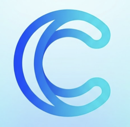
Cologne-style D
The uppercase D is the Cologne C mirrored into a bowl and closed with a straight stem; the C's hooks become rounded loops in the stem's corners. The lowercase d uses the Cologne C itself as its bowl, attached to a tall stem.
Same doubled line, hairpin turns, crescent and stroke weight as the C. Watch-outs: the lowercase can look like a © sign at 24–40px, and at 16px the d's inner lines merge into a solid bowl.
medium risk Uppercase D, trademark screen
Line-drawn Ds are common. The closest are Dailymotion's icon (a D with a second D line inside it) and Elegant Themes' Divi icon (an outlined D in a ring). Neither is in payments, and no payments or messaging brand found uses a double-line D.
- Dailymotion (current D icon) Online video platform · medium similarity
- Divi by Elegant Themes (product icon) WordPress theme and website builder software · medium similarity
- Dash (cryptocurrency) Crypto and payments · low similarity
medium risk Lowercase d, trademark screen
The closest is Deliverect, restaurant ordering software whose icon is a green lowercase d, and it sells to the same restaurants. D-EDGE (hotel software) is also similar.
- Deliverect Restaurant ordering and delivery software · medium similarity
- D-EDGE Hotel booking and distribution software · medium similarity
- Dayforce Payroll, pay and HR software · low similarity
| Uppercase D | Lowercase d | |
|---|---|---|
| Original blue |
Divi
| 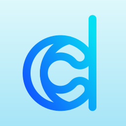 Divi |
| Sage on white |
Divi
| 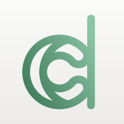 Divi |
| Sage on charcoal | 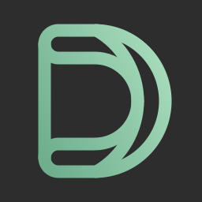 Divi | 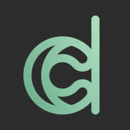 Divi |
| Charcoal | 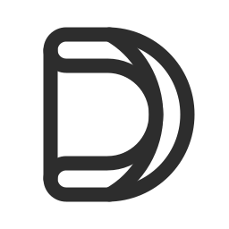 Divi | 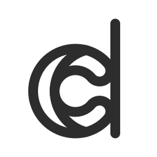 Divi |
| White on sage |
Divi
|
Divi
|
Minimal D
Each letter is one round-capped line that never quite closes: the D runs down its stem, round the bowl and stops just short of the stem; the d does the same around its bowl.
Keeps the C's round-ended line, its weight and its open, not-quite-closed mouth, without the doubled line. At 16px the small gap closes up.
high risk Uppercase D, trademark screen
Too close to OneDosh's registered D (US Reg. 8442961, registered Sept 2026 for payments and money transfer): a D drawn as one continuous curved line with a hook, inside a circle, which is how this D looks as a round chat avatar. I checked the registration myself.
- OneDosh's registered D (US Reg. 8442961) Payments and money transfer · high similarity
- Dojo (Paymentsense) site icon 'D' Card payments and POS for restaurants and hospitality · medium similarity
- Elegant Themes 'Divi' logo WordPress theme and website-builder software · medium similarity
low risk Lowercase d, trademark screen
Reads as a plain rounded d; nothing found that copies it. The closest is Dayforce's lowercase d (payroll software).
- Dayforce lowercase 'd' logo HR, payroll and workforce software · medium similarity
- Deliverect icon Restaurant online-ordering and delivery integration software · low similarity
- NTT DOCOMO 'd' design mark (USPTO Serial 88303744) Mobile payments and payment software · low similarity
| Uppercase D | Lowercase d | |
|---|---|---|
| Original blue |
Divi
|
Divi
|
| Sage on white |
Divi
|
Divi
|
| Sage on charcoal |
Divi
|
Divi
|
| Charcoal | 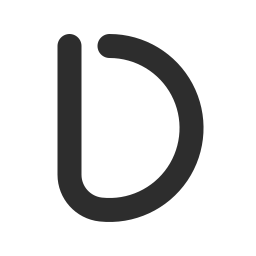 Divi |
Divi
|
| White on sage |
Divi
|
Divi
|
Most minimal D
Each letter is just two round-capped strokes: a straight stem and a circular arc whose round tips rest on the stem. The uppercase is a stem with a reversed half-circle; the lowercase uses the Cologne C as its bowl on a tall stem.
The C distilled to its round stroke and touching tips. It sits close to a rounded geometric font, so it is the least distinctive of the three.
high risk Uppercase D, trademark screen
Very close to Elegant Themes' Divi icon, a white single-line D inside a ring; as a round chat avatar this D looks almost the same. DEUNA (payments) is also similar.
- Divi theme 'D' icon (Elegant Themes) Website-builder software / WordPress theme · high similarity
- DEUNA app icon Payments / checkout infrastructure · medium similarity
- Dailymotion 'D' icon (2023) Video platform · low similarity
low risk Lowercase d, trademark screen
Reads like the d of a rounded font; nothing found that copies it. The closest is Deel's 'd.' icon (payroll and payments).
- Deel 'd.' icon Payroll / HR / global payments · medium similarity
- Dailymotion lowercase 'd' icon (2015 to 2023, retired) Video platform · low similarity
- Deliverect mark Restaurant online-ordering / order-management software · low similarity
| Uppercase D | Lowercase d | |
|---|---|---|
| Original blue |
Divi
|
Divi
|
| Sage on white |
Divi
|
Divi
|
| Sage on charcoal | 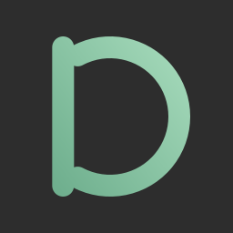 Divi |
Divi
|
| Charcoal | 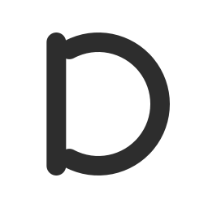 Divi | 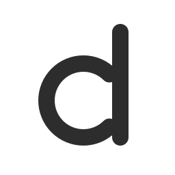 Divi |
| White on sage |
Divi
|
Divi
|
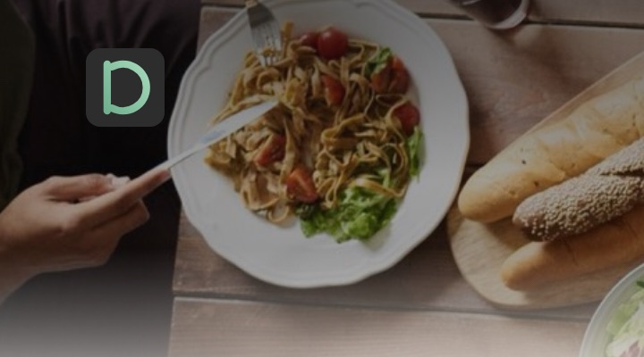
Fork, dark backgrounds
Fork in charcoal and two greens, on any background
The version you liked, with a white edge so the charcoal piece still shows on dark backgrounds. The outlines follow each of the three pieces' contours. On white the edge disappears, and the app icon and chat avatar are plain white with no dark shape behind the logo.
| White | Light gray | Charcoal | Deep sage | Photo | App icon · avatar · tabs | Homepage corner | |
|---|---|---|---|---|---|---|---|
| OriginalThe light-background Fork as it was: charcoal, sage and dark sage. On dark backgrounds the charcoal piece disappears. | 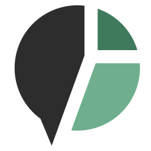 |  |
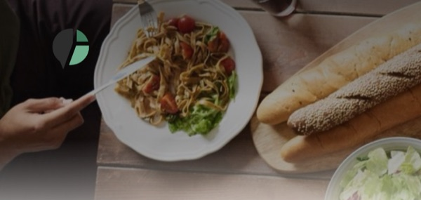 |
||||
| Thin outlineA thin white line around each of the three pieces, following their contours. | 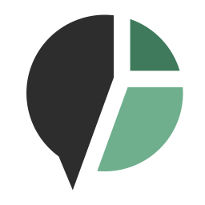 |  |
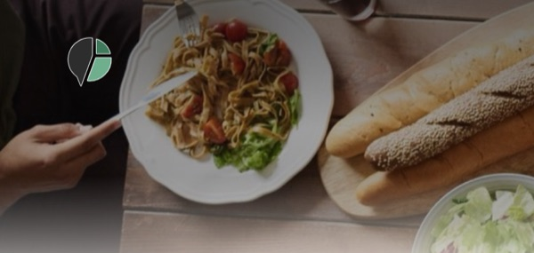 |
||||
| Medium outlineThe same contour outline, a little heavier, so it holds up at small sizes. | 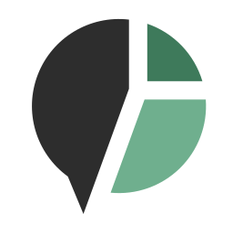 |  |
|||||
| Heavy outlineA bolder contour outline; the three outlines still stay separate. | 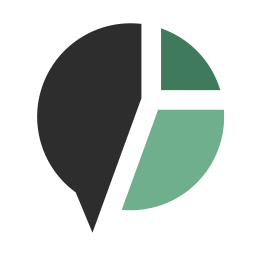 |
DiviDivi |
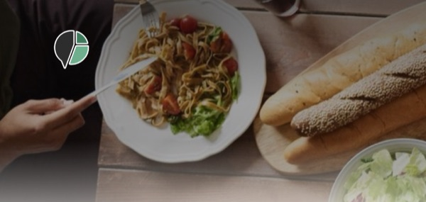 |
||||
| StickerThe outlines grow until they merge into one white backing around the whole shape. |  |
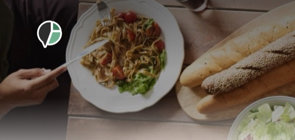 |
|||||
| White circleA white circle behind the logo, laid out exactly like the original round app icon. |  |
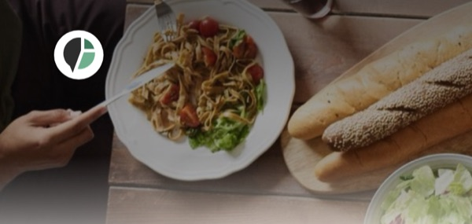 |
Round 3
Table for Two, tilted, and Fork
Tilted 30°, rising
The original Table for Two with nothing changed: a sage table with one diner above its left end and one below its right end, rotated so the table rises to the right at 30°.
Rising to the right puts the two diners exactly where the circles of a % sign go, so this direction reads as a percent sign at small sizes.
medium risk Trademark screen
Everyone will read it as a percent sign. The closest real logo is Percent's, a slash rising to the right with a dot at top-left and bottom-right. Percent signs are common in finance and discount branding, so this would be hard to own even though no single owner looks likely to win a claim.
- Percent logo (a slash with two solid dots) Fintech, private credit · medium similarity
- Coral percent sign with a smile band (US Reg. 5483039) Advertising and price comparison · low similarity
- % Arabica (US Reg. 5197858) Coffee shops · low similarity
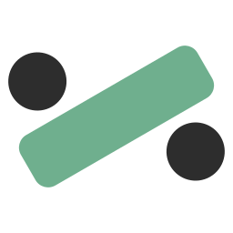
Tilted 40°, rising
The original Table for Two with nothing changed: a sage table with one diner above its left end and one below its right end, rotated so the table rises to the right at 40°.
The steeper angle makes the table read more like a slash, so the % resemblance is even stronger than at 30°.
medium risk Trademark screen
The same percent-sign reading, and at 40° it sits even closer to the 45° slash in Percent's logo, so of the four this is the one most likely to be seen as their kind of mark.
- Percent logo (a slash with two solid dots) Fintech, private credit · medium similarity
- Coral percent sign with a smile band (US Reg. 5483039) Advertising and price comparison · low similarity
- % Arabica (US Reg. 5197858) Coffee shops · low similarity
Tilted 30°, falling
The original Table for Two with nothing changed: a sage table with one diner above its left end and one below its right end, rotated so the table falls to the right at 30°.
Falling to the right keeps the diners at the outer ends of the table, so it reads as a tilted divide sign rather than a %.
low risk Trademark screen
Reads as a tilted divide sign. No fintech, payments or restaurant brand found uses one; it shares only loose traits with Cash App's $, the Zelle Z and BILL's Divvy V. The lowest risk of the four.
- BILL's Divvy V mark (US Reg. 6784829) Spend management · low similarity
- Cash App $ icon Payments · low similarity
- Zelle Z Bank payments · low similarity
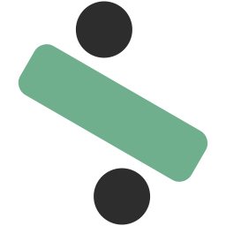
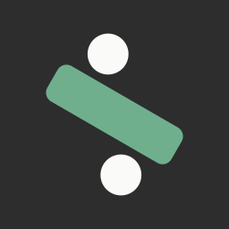
Tilted 40°, falling
The original Table for Two with nothing changed: a sage table with one diner above its left end and one below its right end, rotated so the table falls to the right at 40°.
At 40° the diners sit almost directly above and below the table's ends, which makes the divide-sign reading strongest.
low risk Trademark screen
Also a tilted divide sign with no brand found using one. At 40° the top dot shifts toward the upper right, a small step closer to BILL's Divvy V (a falling bar with one circle) and to a slanted $. Still low, but slightly above the 30° version.
- BILL's Divvy V mark (US Reg. 6784829) Spend management · low similarity
- Cash App $ icon Payments · low similarity
- Zelle Z Bank payments · low similarity
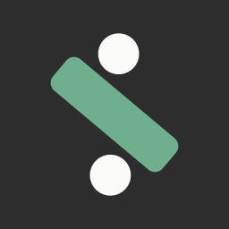
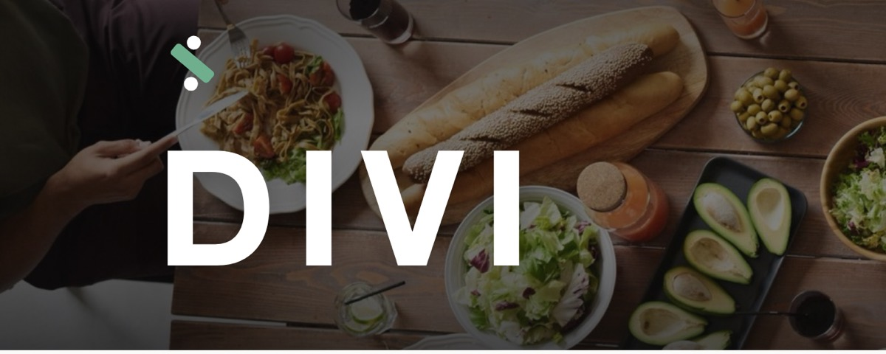
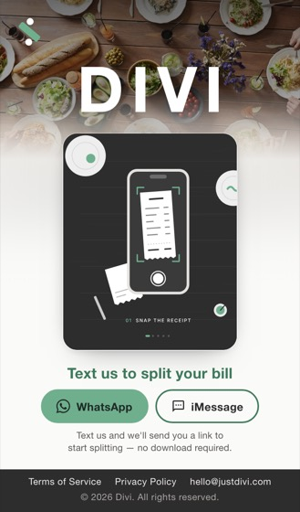
Fork
A round chat bubble with one cut that rises out of the tail on a diagonal, turns straight up, and sends a horizontal branch to the right edge. That gives three unequal shares of about 61/29/11: the speaking piece with the tail (charcoal on light, off-white on dark), a sage share, and a small corner share (dark sage #3E7A5B on light, light sage #8CC4A5 on dark).
This is the closest descendant of the round-1 split bubble. It keeps the detail where the cut runs on as the edge of the tail, and adds the extra splits you asked for. The cuts run at three angles (diagonal, vertical, horizontal) and the cut line bends, so no straight cut runs through the bubble. The shares are clearly unequal, which fits Divi's 'pay for what you had'.
Status: Still a maybe from round 2.
- At 40-120px the speaking piece reads as a map pin or teardrop and the green pieces read as pie-chart wedges. The brief lists generic pie charts as something to avoid.
- The 20° bend where the diagonal turns vertical looks like a crooked cut, not a deliberate one.
medium risk Trademark screen
No registered mark copies Fork's cut. Its risks are two neighbours: a small bill-splitting app (Splitz) whose icon is also an off-white circle on a charcoal tile, cut by a diagonal gap into a large piece and a detached wedge; and WhatsApp's round bubble with a tail at the lower left, which WhatsApp has now filed for bill-payment services. Divi will appear inside WhatsApp chats, so a green-tinted bubble with a lower-left tail could look like an official WhatsApp feature.
- WhatsApp bubble logo (US App. 99088567, Class 36 incl. bill payment, allowed Feb 2026; also US Reg. 7031241) messaging / payments · medium similarity
- Splitz: Track & Split Expenses (app icon) bill splitting · medium similarity
- Tikkie (app icon) payment requests / bill splitting sent over WhatsApp (NL/BE/DE) · medium similarity
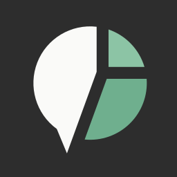
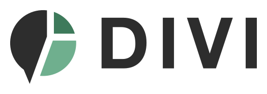
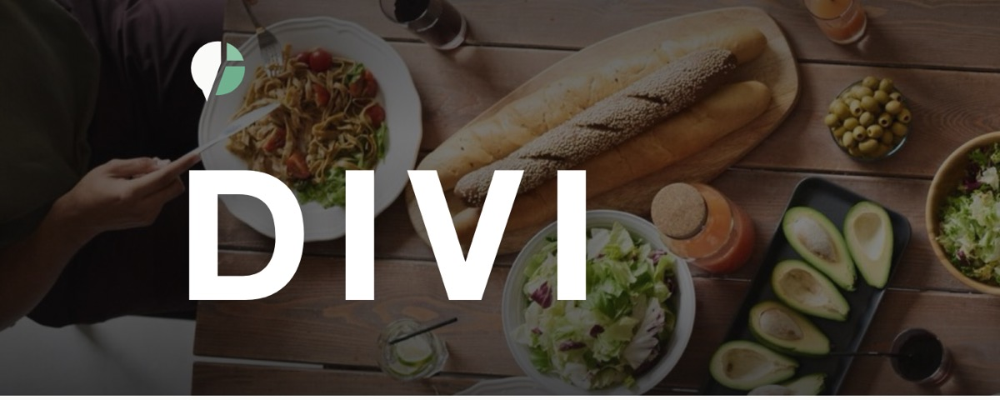
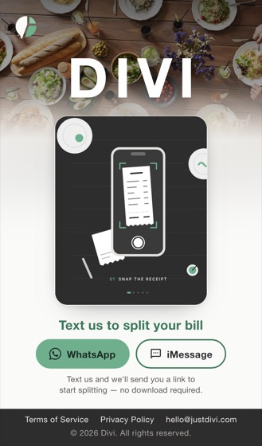